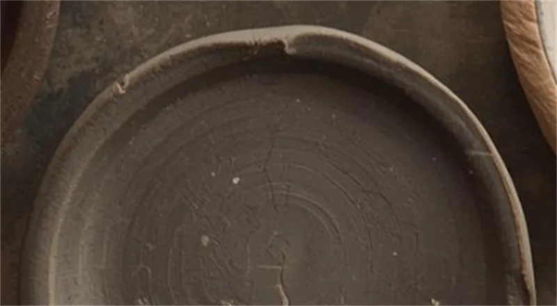

Error 404 · Returned to the earth
This page has returned to the earth.
It was here once, or was meant to be. The studio regards this as completion rather than loss. Everything else is intact, for now.

Error 404 · Returned to the earth
It was here once, or was meant to be. The studio regards this as completion rather than loss. Everything else is intact, for now.
